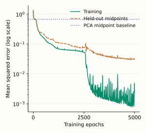

Autoencoders
An autoencoder learns a smaller representation by trying to reconstruct its input. The encoder turns a feature vector into a code; the decoder uses that code to produce a reconstruction. Training adjusts both parts to reduce the mismatch.
Let $x$ be an input, $z$ its code, and $\hat x$ its reconstruction. Write $\theta$ for the encoder’s learned parameters and $\phi$ for the decoder’s:
A code with fewer coordinates than the input is an undercomplete bottleneck. The decoder must recover information from those coordinates. Whether that is possible depends on the structure of the data and what the encoder preserves.
What can one number preserve?
Reuse the curve from kernel PCA: each point is $x=(t,t^2)$. These are two-coordinate inputs, but one underlying value $t$ determines both coordinates. An encoder could keep the signed first coordinate, $z=t$, and a decoder could reconstruct $(z,z^2)$ exactly.
Keeping $z=t^2$ instead loses the sign. Both t = −1.5 and t = 1.5 become the same code, 2.25. A decoder cannot know which input produced it. Below, that decoder chooses the positive square root. To measure the error, square the difference in each coordinate and average the two numbers.
This is the purpose of the code: retain enough information for the reconstruction task. A learned code need not equal an original feature, have an obvious meaning, or use the same coordinate scale across different training runs.
Give the network a reconstruction objective
For real-valued features, a common choice is mean squared error (MSE). With $N$ training rows and $D$ features, let $x_{ij}$ be feature $j$ of row $i$, and $\hat x_{ij}$ its reconstruction. Average the squared differences over all $ND$ entries:
For the mistaken reconstruction (1.5, 2.25) of input (−1.5, 2.25), the first-coordinate difference is 3 and the second is 0. Their average squared error is $(3^2+0^2)/2=4.5$.
Backpropagation sends derivatives of this loss through the decoder, through the code, and into the encoder. An optimizer updates both sets of parameters. The input supplies its own target. No class labels are needed for this reconstruction task, although it still requires training data and a held-out evaluation.
The loss also defines what the network is rewarded for keeping. A feature with much larger numerical values can dominate squared error. Choose preprocessing and, when appropriate, feature weights to match the reconstruction task; see when to scale features.
Watch a network learn the curve
Now replace the hand-written functions with a trained network. Its layer widths are 2 → 12 → 1 → 12 → 2. The encoder ends at the one-coordinate layer; the decoder starts there. Hidden layers use tanh activations, and the output is linear so reconstructed coordinates are not restricted to a probability range.
Train on 81 equally spaced t values from −2 to 2. Keep the 80 intervening midpoints out of training. This is a controlled test of interpolation along the curve, not a benchmark for other datasets. Center both sets using only the training mean, then run 5,000 training epochs with one fixed initialization.
A reconstructed curve can look plausible even when individual inputs map to the wrong places on it. Select Inspect missed midpoint: at the final checkpoint, t = 1.225 has average squared error about 2.3547. Its target is (1.225, 1.500625). The model’s small training error did not prevent this failure between training samples.
Check reconstruction on observations excluded from training
The plot below records error after training updates. Green uses the 81 training inputs; orange uses the 80 held-out midpoints. The blue reference is a one-component PCA model fitted to the same training inputs, with the same per-coordinate MSE definition.

The nonlinear network improves on this linear baseline, but the remaining midpoint error is real. These observations do not establish performance off the curve or outside the training range. Architecture, initialization and optimization can also change the result.
Python: reproduce training, extract codes and reconstruct held-out rows
import numpy as np
from sklearn.neural_network import MLPRegressor
from sklearn.decomposition import PCA
train_t = np.linspace(-2, 2, 81)
heldout_t = (train_t[:-1] + train_t[1:]) / 2
X = np.column_stack([train_t, train_t**2])
V = np.column_stack([heldout_t, heldout_t**2])
mean = X.mean(axis=0) # [0, 1.3666667], estimated on training rows only.
A, B = X - mean, V - mean
model = MLPRegressor(
hidden_layer_sizes=(12, 1, 12), activation="tanh", solver="adam",
alpha=0, batch_size=81, learning_rate_init=0.01,
shuffle=False, random_state=23,
)
checkpoints = [1, 50, 100, 250, 500, 1000, 2500, 5000]
for epoch in range(1, 5001):
model.partial_fit(A, A) # Input is also the reconstruction target.
if epoch in checkpoints:
train_mse = np.mean((model.predict(A) - A)**2)
heldout_mse = np.mean((model.predict(B) - B)**2)
print(epoch, train_mse, heldout_mse)
# Last row: approximately 5000, 0.002414, 0.031774.
def encode(new):
h = np.asarray(new, dtype=float) - mean
for layer in [0, 1]:
h = np.tanh(h @ model.coefs_[layer] + model.intercepts_[layer])
return h # One code coordinate per row.
def decode(code):
h = np.tanh(np.asarray(code) @ model.coefs_[2] + model.intercepts_[2])
return h @ model.coefs_[3] + model.intercepts_[3] + mean
np.testing.assert_allclose(decode(encode(V)), model.predict(B) + mean)
pca = PCA(n_components=1).fit(X)
print(np.mean((pca.inverse_transform(pca.transform(V)) - V)**2))
# Approximately 0.666563, with the same per-coordinate MSE convention.
Each partial_fit call makes one pass through the 81 training rows. The regressor becomes an autoencoder because its target is its input and its hidden representation contains a one-coordinate bottleneck. The reported MSE is calculated directly, rather than copied from a library loss with a potentially different constant factor. This run uses scikit-learn 1.9.1.
The final fitted weights and training mean are also available as JSON. Weight matrices use input-by-output orientation, matching coefs_.
How this connects to PCA
A fully linear undercomplete autoencoder trained to the global squared-error optimum recovers a principal subspace of centered data. Its reconstruction can match PCA, even though its internal code need not use PCA’s orthonormal axes. A nonlinear decoder can instead trace a curved set of reconstructions, as the hand-written example illustrates.
Why different code values need not mean different reconstructions
If an encoder outputs $z$ and the decoder expects $z$, we can rescale the code to $2z$ and modify the decoder to divide its input by 2. The reconstruction stays identical. More generally, an invertible change of code coordinates can be undone by the decoder. Reconstruction training alone therefore does not give latent coordinates a unique scale or semantic meaning.
Use the representation for the task you actually care about
For a new input, apply the saved preprocessing and encoder to obtain its code. Use the decoder if a reconstruction is needed. When selecting architecture, code size or regularization for prediction, evaluate the complete training procedure inside the appropriate validation split.
Low reconstruction error does not imply a useful class representation. A small but predictive feature may matter little to the reconstruction loss; the PCA chapter shows the related difference between retained variation and task signal. Likewise, a high reconstruction error can be an anomaly score, but it does not by itself establish that an observation is anomalous.
A bottleneck is one possible constraint
A flexible network can still fit a finite training set extremely closely with a small code. Code width controls the number of coordinates, not the entire model’s capacity. Held-out reconstruction and downstream evaluation remain necessary.
Other autoencoders add constraints. A denoising autoencoder receives a corrupted input and tries to recover the original clean input; simply copying the corrupted values no longer solves its training task. Sparse autoencoders instead penalize widespread code activity. The appropriate constraint depends on which structure should survive in the representation.
A standard reconstruction autoencoder also does not specify a probability distribution from which to sample codes. Decoding arbitrary latent numbers is therefore not automatically a way to sample realistic data. Generative extensions add assumptions and training objectives for that purpose.
Optional implementation: apply the fitted encoder and decoder
The Python example trains the network. This C++ companion runs its forward pass from saved parameters, returns the one-coordinate code, and restores the training mean after decoding. Its explicit layer-size checks document the architecture used in the figures.
C++17: the 2 → 12 → 1 → 12 → 2 forward pass
#include <array>
#include <cmath>
#include <stdexcept>
#include <vector>
struct Layer {
// weights[input coordinate][output coordinate], matching scikit-learn.
std::vector<std::vector<double>> weights;
std::vector<double> bias;
};
struct Autoencoder { std::array<double, 2> mean; std::vector<Layer> layers; };
struct Result { double code; std::array<double, 2> reconstruction; };
Result encode_decode(const Autoencoder& model, const std::array<double, 2>& x) {
const std::array<std::size_t, 5> size{2, 12, 1, 12, 2};
if (model.layers.size() != 4) throw std::invalid_argument("four layers required");
for (double v : model.mean) if (!std::isfinite(v))
throw std::invalid_argument("finite fitted mean required");
for (double v : x) if (!std::isfinite(v))
throw std::invalid_argument("finite input required");
std::vector<double> h{x[0]-model.mean[0], x[1]-model.mean[1]};
double code = 0;
for (std::size_t k = 0; k < 4; ++k) {
const auto& layer = model.layers[k];
if (layer.weights.size() != size[k] || layer.bias.size() != size[k+1])
throw std::invalid_argument("layer shape mismatch");
for (const auto& row : layer.weights) {
if (row.size() != size[k+1]) throw std::invalid_argument("weight shape mismatch");
for (double v : row) if (!std::isfinite(v))
throw std::invalid_argument("finite weights required");
}
std::vector<double> next = layer.bias;
for (std::size_t j = 0; j < next.size(); ++j) {
if (!std::isfinite(next[j])) throw std::invalid_argument("finite biases required");
for (std::size_t i = 0; i < h.size(); ++i)
next[j] += h[i] * layer.weights[i][j];
if (!std::isfinite(next[j])) throw std::overflow_error("activation overflow");
if (k < 3) next[j] = std::tanh(next[j]);
}
h = next;
if (k == 1) code = h[0];
}
Result result{code, {h[0]+model.mean[0], h[1]+model.mean[1]}};
for (double v : result.reconstruction) if (!std::isfinite(v))
throw std::overflow_error("reconstruction overflow");
return result;
}
Populate each layer from the Python model’s corresponding weight matrix and bias vector, or from the supplied JSON. The first two layers are the encoder; the remaining two are the decoder. This companion performs inference and does not implement the optimizer.
References and further reading
- Goodfellow, Bengio and Courville: Deep Learning, Chapter 14 — undercomplete models, their relationship to PCA, capacity and regularization.
- Vincent et al. (2008): Extracting and Composing Robust Features with Denoising Autoencoders — learning from corrupted inputs while retaining clean reconstruction targets.
- Scikit-learn: MLPRegressor — hidden layers, fitted weights, incremental training and loss conventions used in the experiment.